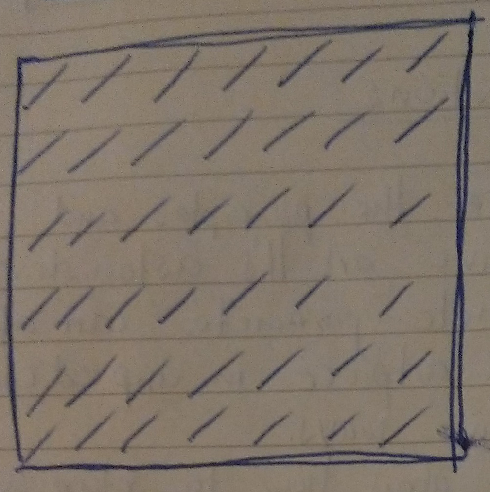
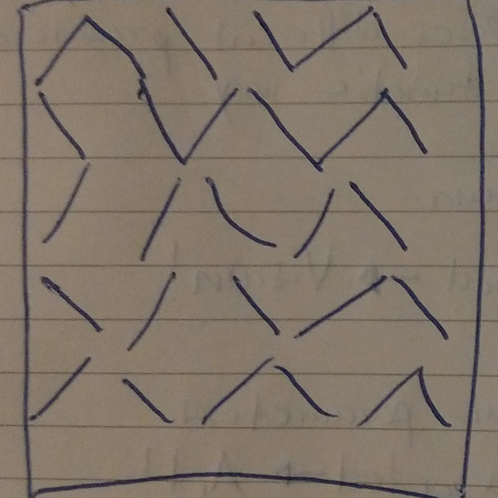
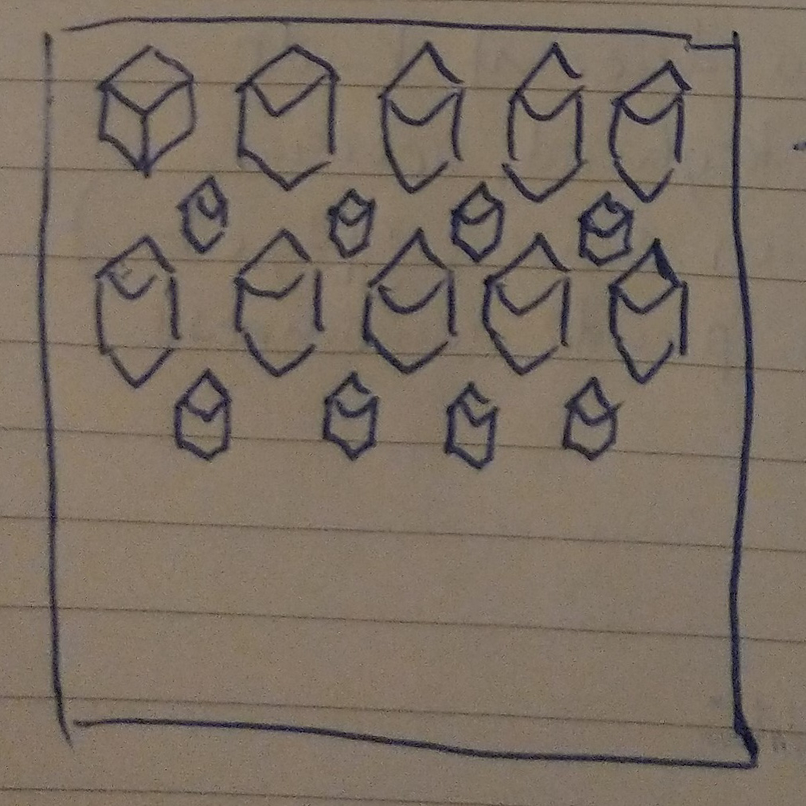

GENCG Working Journal - Day 2 - Grid Patterns



// draw lines in a grid
for (let y = tileWidth / 2; y < rows * tileWidth; y += tileWidth) {
for (let x = tileWidth / 2; x < cols * tileWidth; x += tileWidth) {
push();
// calculate the angle so the line points to the mouse position
let angle = Math.atan2(mouseY - y, mouseX - x);
rotate(angle);
line(x - tileWidth / 2, y, x + tileWidth / 2, y);
pop();
}
}
Show me!
// draw lines in a grid
for (let iY = 0; iY < rows; iY++) {
for (let iX = 0; iX < cols; iX++) {
let x = iX * tileWidth;
let y = iY * tileWidth;
let angle = atan2(mouseY - y, mouseX - x);
//here I manually calculate the start and end points of the line instead of using rotate()
line(x - cos(angle) * tileWidth / 2, y - sin(angle) * tileWidth / 2, x + cos(angle) * tileWidth / 2, y + sin(angle) * tileWidth / 2);
}
}